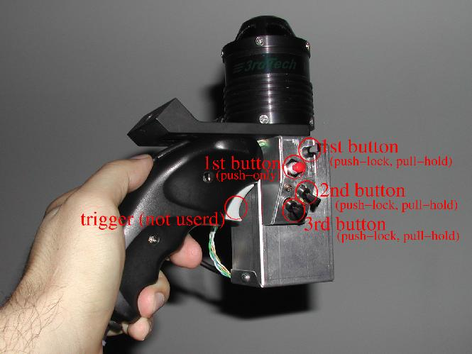
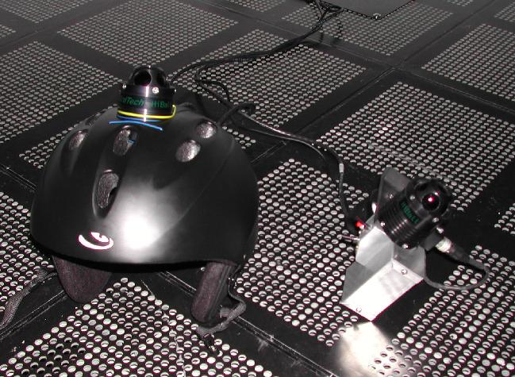
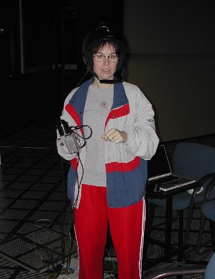
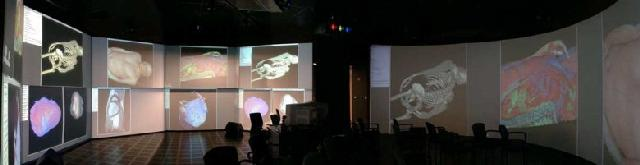
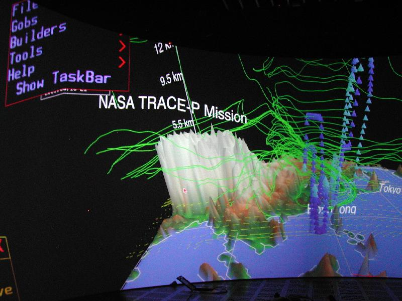
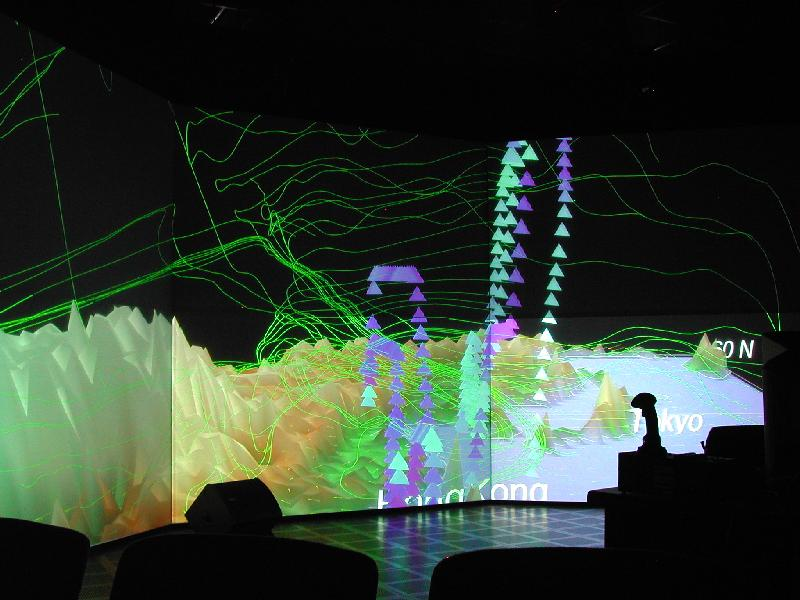

S
ystem integration for
I
mmersive Environment
Using 3rdTech HiBall tracking system with CAVElib
The purpose of this page is to describe how I set up our immersive environment [and optionally: to make fun of it]. This is not a users guide. For users guide, please follow:
Users guide to immersive environment at ACES Visualization Lab
I am actually slightly hoping this document will help to ease someone else's similar task. Please feel free to email me if you are one of these people.
Setting up 3rdTech HiBall Tracker for CAVElib Environment:
The immersive environment system at TEXAS Advanced Computing Center(TACC) consists of 11 projector screens to cover almost 360 degrees of view, driven by 3rdTech's hiBall tracking system with 2 trackers for head and wand (wand is a handheld pointing device), VRCO's CAVElib, and several different platforms of visualization rendering nodes. This was our first immersive environment setup at TACC, and the system integration of our immersive environment with our main visualization node SGI Onyx2 was my first task at TACC.
What we got was not a packaged "total Virtual Reality solution" one can buy now days. It was meant to be custom build. The head tracker we received was very high performance, but it was lacking support from/to CAVElib. In fact, no default driver to CAVElib was provided, so I had to find a way to communicate with CAVElib. Another critical problem was that hiBall had only one buttons/switches, while CAVE applications, like VRCO's "The Virtual Global Explorer and Observatory (vGeo)", requires 3 buttons/switches. As a first timer to set up an immersive environment, our non-standard projector screen, a 180 degrees curved screen worried me as well.
And here is how we got around it.
3rdTech HiBall Tracker
3rdTech HiBall Tracking system is extremely precise optical based head tracker. Once I finished setting it up, I was very happy with its performance. The unit was meant to be a part of customized environment, and was not designed as plug-and-play for preexisting environments. HiBall was designed to use Virtual Reality Peripheral Network (VRPN) API for tracking signal communication to visualization nodes. Since VRPN takes care of communication over network, what I had to do is to write a daemon that runs on the visualization node to fetch tracker signal and pass it to applications, which looks like this.
hiBall ( Head tracker + Wand )
| /
| /
|-(tether) /-(tether)
| /
hiBall Interface Box
|
|-(parallel cable)
|
hiBall server (Dell win2K)
| *hiBall System (Tracking Signal Server)
----------------------------
*Network
----------------------------
| *visualization node (Tracking Signal Client)
hiBall client daemon
VRCO CAVElib
Similarly, CAVElib was supplied with the SDK for trackd, daemon for fetching tracker input. CAVElib is one of the most standard API used for development of immersive environment, and was our choice of API. trackd was designed to accept modules written with trackd SDK. This looks like this.
*visualization node (Tracking Signal Client)
trackd-module
|
trackd
|
|-(shared memory)
|
CAVElib
|
CAVE applications
Creating communication between hiBall and CAVElib trackd
So at this point, what I have to do is to write code to glue those APIs together with transformations to adjust hiBall coordinate system onto our physical coordinate system in the lab. I could have simply written one daemon that runs on visualization machine, but what I decided to do is to write 2 separate daemon for each APIs and connect them with UNIX named pipe for the communications. The use of named pipe is a common technique for communicating between processes. Also, this will enable different types of applications to communicate with hiBall without CAVElib and trackd. If you want to communicate to hiBall from your own application, you can do something like this.
example code
So now, connection look like this.
hiBall ( Head tracker + Wand )
| /
| /
|-(tether) /-(tether)
| /
hiBall Interface Box
|
|-(parallel cable)
|
hiBall server (Dell win2K)
| *hiBall System (Tracking Signal Server)
----------------------------
*Network
----------------------------
| *visualization node (Tracking Signal Client)
hiBall client daemon
| \
|-(named-pipe) \-(named-pipe)
| \
trackd-module \
| \
trackd \
| \
|-(shared memory) \
| \
CAVElib \
| \
CAVE applications Some user application
This enabled a communication from hiBall to CAVElib. Now, since the origin of head tracker was set as the corner of the immersive space, I would translate and rotate the tracking signal to fit in the center of our immersive space with right-hand coordinate system.
Now, we have a head tracker.
Don't we need more buttons?
So now, hiBall and CAVElib can communicate. I happily launched a bouncing ball demo. Then, I realize...the demo needs more than one button. I see only one trigger on the wand. Where are all the other buttons?? Are they already wired? and maybe burrons are just not mounted yet? A lot of CAVE apps require more than 1 button. Hmm... I called up 3rdTech, which they told me,
"hiBall supports only 1 button for now."
Silence.... OK, I knew it is a new tracking device and does not claim to support CAVElib, but I can not see having only 1 button as sufficient to navigate in any immersive environment. We already had vGeo, which requires 3 buttons. What are we going to do. 3rdTech revised their hiBall to support 4 buttons few months later, we needed a solution now. So, we decided not to take any button signals from hiBall at all. CAVElib had several different mode of input, including taking input from "simulator", which here means keyboard and mouse. So...basically, I can use a 3 buttons mouse as my buttons! Another fortunate thing is that our visualization node was a part of matrix switch, a massive m to n KVM switch. I found a spare mouse, and started to disassemble it. I created a buttons box to attach to the wand so I can enclose the mouse circuit board with new buttons soldered on. It now looks like this.

( Here is what the wand looks like. Larger housing contains mouse circuit board. )
Then took the PS/2 cable with extension cable and plugged into the the patch panel of KVM matrix switch. Go ahead laugh. We were desperate. After launching, CAVE applications, we routed the wand buttons box to visualization node by using the matrix switch board, which was physically sitting right next to the keyboard. This worked really well. As 3rdTech revised hiBall to support up to 4 buttons few months later, we also shifted to use buttons signals from hiBall. But we kept this circuit as a back up untill we verify their new feature was robust. After the revision, our setup now looks like this.
*hiBall System (Tracking Signal Server)
hiBall ( Head tracker + Wand + Buttons box )
| / |
| / |
|-(tether) /-(tether) |
| / |
hiBall Interface Box |
| |
|-(parallel cable) |
| (PS/2 cable)
hiBall server (Dell win2K) *used as back up after
| the revision of hiBall
---------------------------- |
| |
| -------------------------------
| | *Matrix switch |
| *Network | (N to M KVM switch box) |
| -------------------------------
| |
| |
---------------------------- PS/2 Port
| |
hiBall_client *visualization node (Tracking Signal Client)
| /
|-(named-pipe) /
| /
trackd-module /
| /
trackd <----- caverc configureation (simulator)
|
|-(shared memory)
|
CAVElib
|
|
CAVE applications
At this point, I started to mount a tracker device to a helmet that I found at ski shop, and also started to make a housing to buttons and circuit board for mouse. The result is..., well, not exactly...um...elegant, but works pretty well. The wand is still surviving after taking bunch of abuse, being kicked around after being left on the floor, and never broke. All thanks to the Dremel tool. After this modification, the floor had piles of plastic and aluminum chunks from the helmet and the wand's switch housings. Our janitors weren't happy, but I was happy.
.\(^_^)/...\(^_^)/..

( Here is the head tracker on a helmet. )

( And here is our first victim who had to wear the unit, our very own Dr. Kelly Gaither )
After this, I had to spend few days to create structure for environment variables and write scripts to set up user accounts. The structure enables users to configure environment regardless of system-wide or domain-wide configuration changes. I had to put this in place since we had 3 different visualization node we used to drive the immersive environment. For more information, please refer to the immersive environment users guide, "Immersive Environment in the ACES Visualization Lab".
CAVE Screen configurations
Then I spent some time on screen configurations. Our immersive environment has total of 11 screens, driven by 13 projectors, to cover 360 degrees of view. It is somewhat very unique. Especially the front screen is curved screen, driven by 3 projectors, and covered 180 degrees of front view.

Projecting an image rendered for a flat screen onto a curved screen would be incorrect thing to do. So, I decided to create bunch of "screens" horizontally next to each other by subdividing screens with vertical edges. As I increase the number of screens, images on the screens should start to stick onto physical screens. I wrote a small code to create screen configurations to n-stripes, and started to experiment how many stripes of screens I could have with reasonable frame rate. CAVElib will create a thread for each graphics pipes, but not a screen. Having 24 CPUs does not help too much as more screens were driven from the same counts of graphic pipes. I settles somewhere around 8 screens per a graphics pipe. Here are pictures of vGeo running on both front and back screens. Notice there is a seam (line is bent) on the projected menu images, between the word "Show Ta" and "skBar". This is the seam of stripes. I created narrower stripes towards the center of screen. That is why more towards the center of the screen has smoother image.

( vGeo in action on front-side curved screen. )
Here are pictures of vGeo running on both front and back screens. This dataset is my favorite, NASA Trace-P mission data. It makes a good starry night type scenes, and perfect to put them on screen when you want to take a nap in the visualization lab. This is a picture of me taking a nap...if you can see it.

( Back-side flat panels with TRACE-P data. )
We now have CAVE environment running in 360 degrees of our view angle. It now really feels like "immersive."
IR blocking for stereo glasses, and finally more buttons.
As we started to use stereo view mode, we ran into a new problem. We use active stereo separation to run stereo view mode. The IR emitters for our stereo glasses had interference with hiBall's emitter strips (also IR based), which caused tracking coordinate to occasionally jump. As we talked to 3rdTech, they agreed to create a subsystem to dump dirty signals by reading the stereo emitters' IR signal. This actually became one of their products later. They have also revised hiBall to support up to 4 buttons few months later. This is the most recent setup of our system. We have disconnected PS/2 line from our standard connection, so it now looks like this.
*hiBall System (Tracking Signal Server)
hiBall ( Head tracker + Wand + Buttons box )
| / / \
| / / \
|-(tether) /-(tether) /-(tether) \
| / / \
hiBall Interface Box <-(*hiBall revision)--\------IR blocking sensor box
| \
|-(parallel cable) \
| (PS/2 cable)
hiBall server (Dell win2K) *used as back up after
| the revision of hiBall
----------------------------
|
|
|
| *Network
|
|
|
----------------------------
|
hiBall_client *visualization node (Tracking Signal Client)
|
|-(named-pipe)
|
trackd-module
|
trackd
|
|-(shared memory)
|
CAVElib
|
|
CAVE applications
End note, and more visualization nodes...
It was a very fun task. So far, we are very happy with this set up, and most importantly, it never gave us any problem. Our notorious "spare mouse hack" was eventually discomissioned as hiBall's native buttons are proved to be robust. A fact that we use named pipe came convenient. When I was asked for a head tracker support to be a part of user application, I could just give only few lines of proved code segment along hiBall_client daemon. This allowed the use of hiBall signal withour effort, which makes me happy.
Over 2 years, I have configured several different visualization node for the immersive environment as new visualization nodes are delivered to TACC. Configuration to SGI Prism(IA-64 Linux) and Sun Fire V880 were somewhat similar to the existing Onyx2 setup. Setting up E25K-modified was somewhat different and interesting task. The node is located physically 9 miles away from the Visualization Lab. 3 channels of video with stereo sync, keyboard and mouse were connected by Teraburst's V2D transmitter/receiver pair. Head tracking signal to E25K-modified was carried via VRPN over network. Getting stereo signal genlocked over V2D took quite a lot of testings. We now support multiple visualization node with head tracking for our immersive environment.
I am currently working on related projects. Using PDA in immersive environment for hosting more buttons/potentiometer, allowing alphanumeric input, and enabling haptic device is one such an effort. Creating API for virtual keyboard for CAVE space is another. Please refer to projects page for the more information.
makoto@tacc.utexas.edu
ACES 2.340
(512)475-6954
TEXAS Advanced Computing Center
Visualization and Data Analysis Group
updated: March 11th 2006